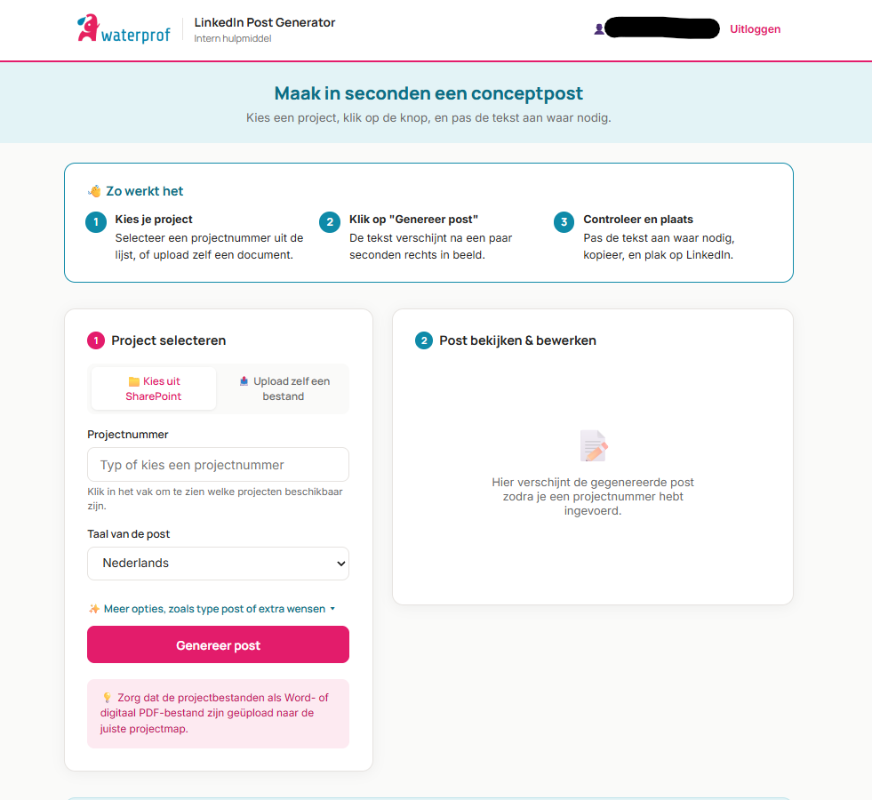

We built a secure AI assistant inside Waterprof's own Azure environment that drafts LinkedIn posts from project documents, in Waterprof's tone. The data stays in-house and the team approves every post.
Result: 45 minutes saved per post. With about 3 posts a week, that is over 2 hours a week back for the work that matters.
WATERPROF · LINKEDIN CONTENT
Drafts in your tone. Data stays in-house.
WATERPROF'S OWN AZURE ENVIRONMENT
SharePointProject documents
AI assistant
read the project
write in house tone
WDraft post
Checked and approved by the team
Publishedon LinkedIn
RESULT
About 45 minutes saved per post
EVERY WEEK
About 3 posts: over 2 hours back
Animation: inside Waterprof's own Azure environment, an AI assistant reads a project from SharePoint and drafts a LinkedIn post in Waterprof's tone. The team approves it before it is published. About 45 minutes saved per post.
WATERPROF · LINKEDIN CONTENT
Drafts in your tone. Data stays in-house.
WATERPROF'S OWN AZURE ENVIRONMENT
SharePointProject documents
AI assistant
read the project
write in house tone
WDraft post
Checked and approved by the team
Publishedon LinkedIn
RESULT
About 45 minutes saved per post
EVERY WEEK
About 3 posts: over 2 hours back
Animation: inside Waterprof's own Azure environment, an AI assistant reads a project from SharePoint and drafts a LinkedIn post in Waterprof's tone. The team approves it before it is published. About 45 minutes saved per post.
The Problem
Employees spent about an hour on every LinkedIn post: finding the right project information, writing the text and checking the tone. Nobody enjoyed it. The solution also had to stay inside Waterprof's own Microsoft and Azure environment, because data handling was a hard requirement.
The Approach
We built an AI assistant on Azure, inside Waterprof's existing Microsoft environment. It pulls a project from SharePoint on request and drafts a LinkedIn post in Waterprof's own voice. A person on the team always reviews the draft before it is published.
AzurePython

The internal tool Waterprof's team uses: pull a project from SharePoint, generate a draft, then check and edit it before it goes out
Results
Posts no longer start from a blank page. Each post takes about 45 minutes less, and with around 3 posts a week the team gets more than 2 hours a week back. All data stays inside Waterprof's own secured environment.